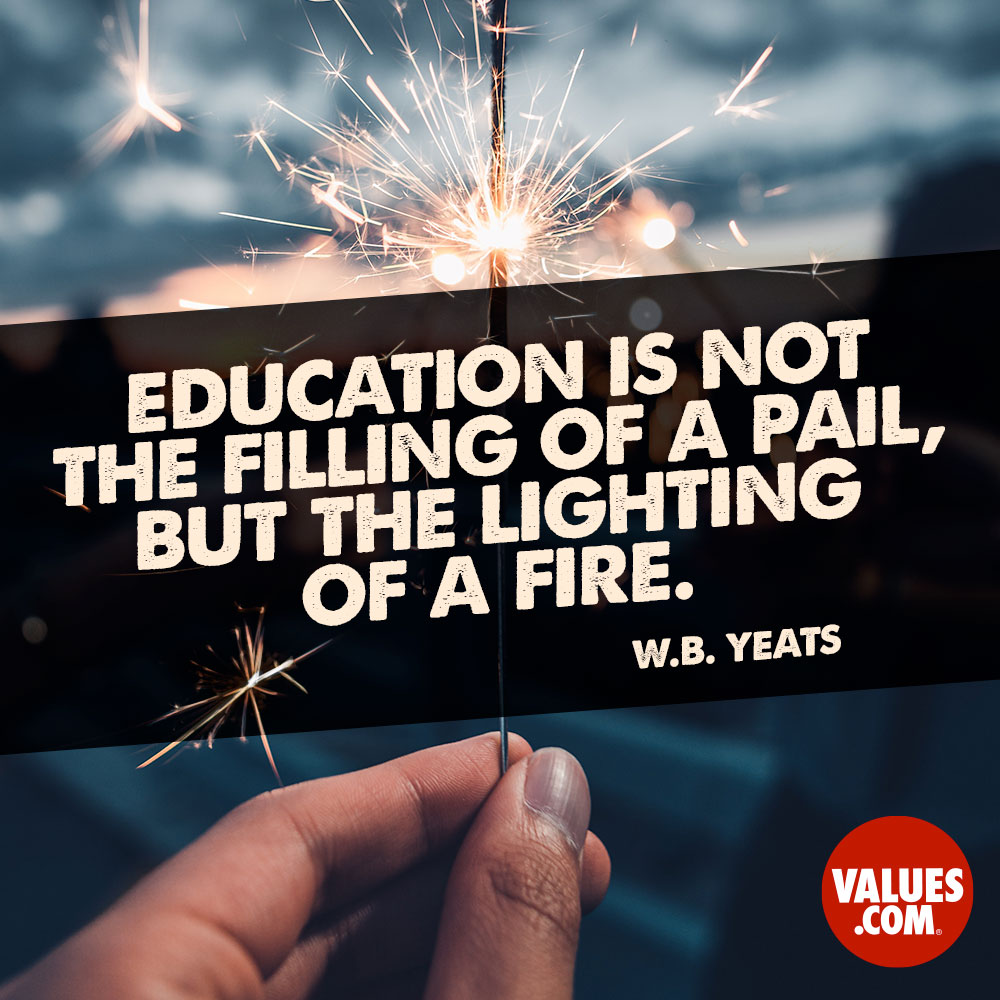
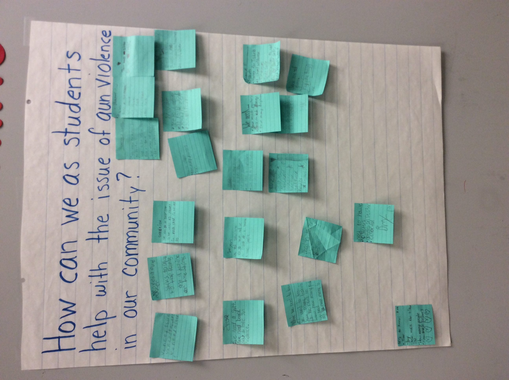
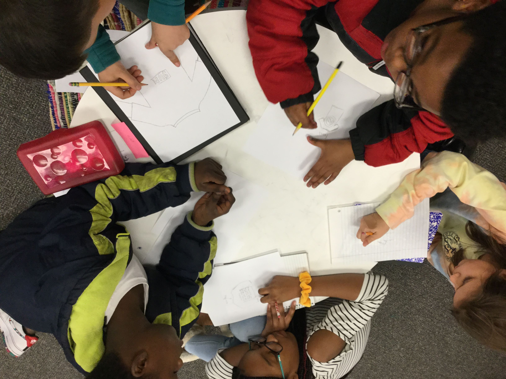

Project Based Learning
From 2016-2018, I had the pleasure of working in a Project Based Learning (PBL) Cohort. PBL empowers students to become the driving force in their educational journey and helps students ignite their own passion for learning!

From 2016-2018, I had the pleasure of working in a Project Based Learning (PBL) Cohort. PBL empowers students to become the driving force in their educational journey and helps students ignite their own passion for learning!
In 2020, students in 4th and 5th grade collaborated to find solutions to gun violence in their city and designed t-shirts for a peaceful protest.



During the pandemic, I collaborated with students and staff members at Wellington Elementary to create an interactive virtual library.